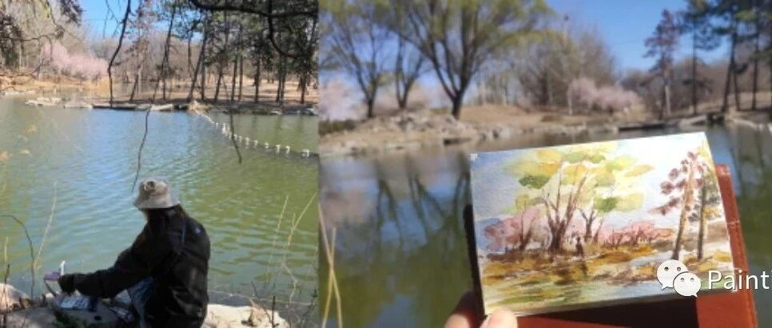

2023年第一次写生！从被当作考古学家开始
原创
LCX
LCX
PaintingDiary
2023年03月19日 18:10
北京
在小说阅读器中沉浸阅读
昨天天气甚好，起床之后就赶紧抄起写生的家伙出门了。
圆明园的桃花在蓝色的天空映衬下，像极了梵高的那幅杏花。
昨天写生只带了一只钢笔、小号毛笔和新买的排刷，意外地适合户外写生这个场景。
刷子能够一次抓到更多的颜料，在打湿的水彩纸上可以创造出更加随机的晕染。
而且排刷扁扁的形状，超级适合画水波纹，效果非常滴喜欢～
画完这幅画离开的时候，才发现有两个小姐姐在等我，想把刚刚拍到的照片发给我
感谢热心的小姐姐～
一直都是一个人写生，但却经常能收获陌生人的赞赏～
就那么几分钟，在某个随机的角落，和陌生的世界产生了温暖的联结。好神奇。
之后还遇到了野餐之后的一家三口，那位妈妈用肥皂水在空中一挥，划出了好多彩色的泡泡，阳光下超级美～
奈何我画技不够，没能还原当时那种美好的感觉。
之前觉得树好难画，现在发现比树更难画的是——白色的树。有种好想努力但是不管怎么努力都在减分的感觉。
在画这幅画的时候我的颜料盒打翻在了水边的枯叶中，我一个心惊。赶紧抄起旁边的枯树枝在一片落叶中划拉。
一块颜料也就一颗花生那么点大，而且好多颜色变成固体水彩之后就是黑乎乎的。可想而知找起来有多难。
我正扒拉着的时候就听到后面有两个小孩对话：
"这个人是不是考古学家啊"。
我：。。。
到最后还是有一块颜料没找到，不过我的气质已经到达了考古学家那样的高度了吗
好啦，总之在这个充满希望的季节～我一定会多多写生的～！
欢迎留言、转发or给个"在看"～
下回见～！


 感谢热心的小姐姐～
感谢热心的小姐姐～


 感谢热心的小姐姐～
感谢热心的小姐姐～